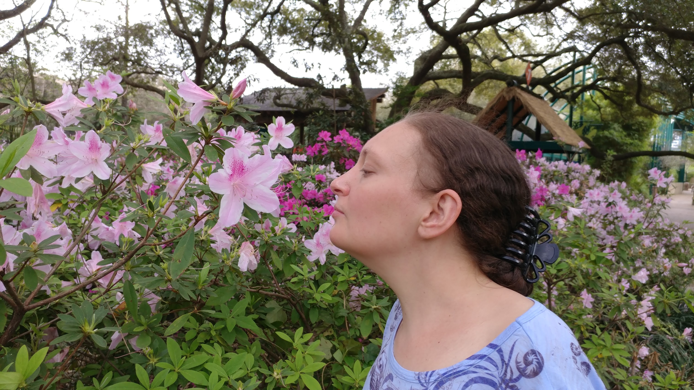
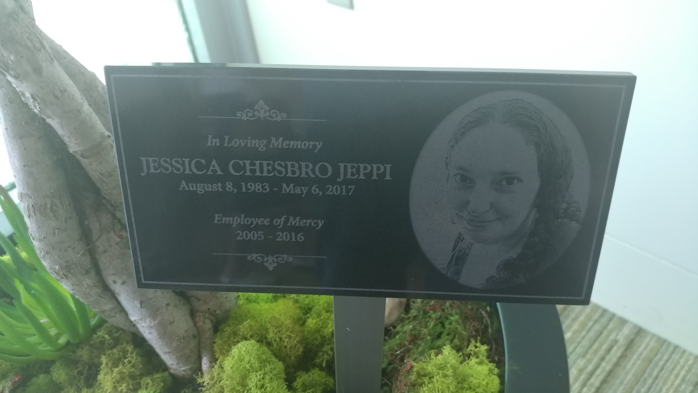
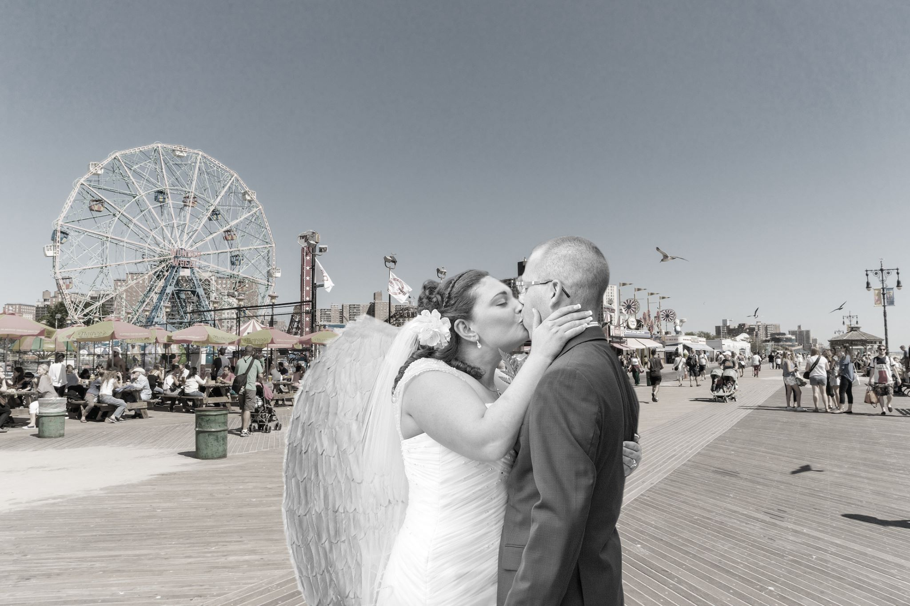
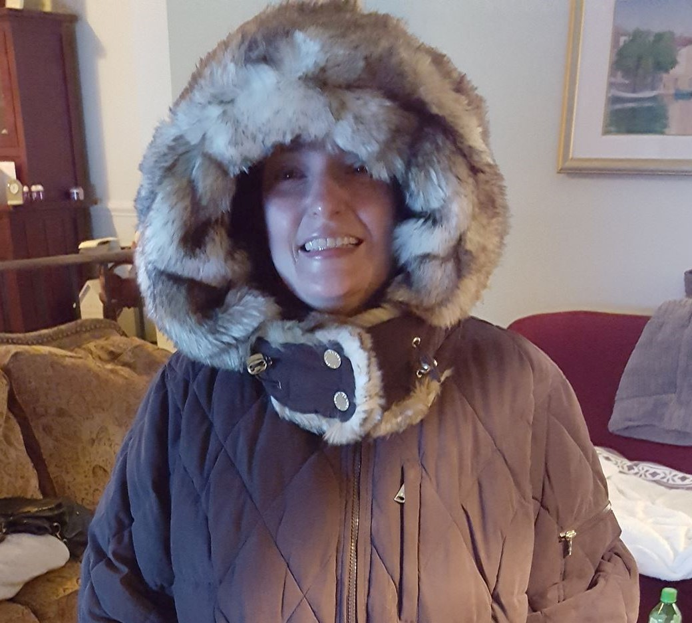
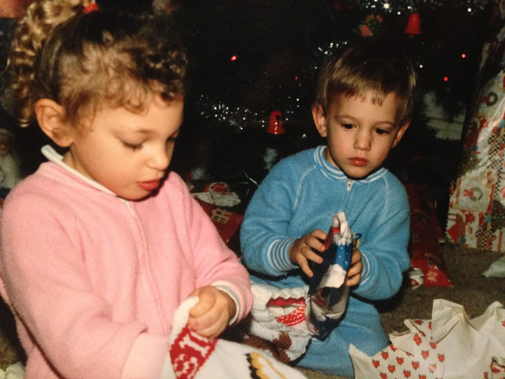

Jessica Chesbro Jeppi
August 8th 1983 - May 6th 2017

Introduction
Jessica struggled with epilepsy her entire life going through countless different medications to control it. She was a very kind and caring person who always put others before herself, and even when she was sick, it was still more about the other person rather than her. She was admitted to Mercy Medical Center back in August of 2016 for low blood counts which caused her to suffer from massive fatigue. This diagnosis then led us on a journey to discover the actual cause of what was creating these issues. After Mercy Medical Center we went to NIH, Johns Hopkins, then all the way to Houston Texas to MD Anderson. Jessica had blood transfusions almost every day because her blood counts would keep plummeting from the disease. After going through several rounds of chemo both at Johns Hopkins and MD Anderson, it seemed that the disease had finally won and she was given only a week to live. After this news, we rushed her back from MD Anderson to Johns Hopkins then back home for the remainder of the time she had left. Jessica was the kindest and most caring person I have ever met, and I will miss her always.

Jessica loved her job at Mercy Medical center
She was a loved employee with lots of friends from all different departments. When she was sick at the beginning her biggest concern was "when am I going to be able to get back to work!" She always took pride in her work staying as late as needed to get her job done. This picture shows the plaque that will stay at Mercy in remembrance of her many years of dedication.

Remembering the good times!
Facebook posts from friends and family
"Death won't break the bond we share. I will see you everywhere. Love & peace to my sweet sweet girl." -Jacqui Chesbro
"Thirteen months ago I lost you forever. You are so missed & loved now more than ever. So grateful for the memorial at the Chapel of Light at Mercy. You are not forgotten. XOXOX" -Jacqui Chesbro
".....I know that was you yesterday. You were flying around Pete and I in such a way that we knew it had to be you. I felt your presence and knew you were there. I miss you so much. Come back and see me again soon🦋" -Kristina Caton
"
"A year ago today my beautiful niece Jessica Chesbro Jeppi left this world, entirely too early. Jessie was a beautiful soul, a sweetheart, silly a little goofy sometimes, but always had such a positive outlook. This is the 1st time, I think, that I have spoken about her passing on here. Just couldn't bring myself to actually put it down in writing. I guess it just makes it too real. I can still hear your voice asking me about my health, how I was doing all the while taking your own illness in stride. Jessie was one of a kind and will be missed by so very many people. Heaven is a sweeter place now that you are an occupant. I love and miss you so very much, but you are here, alive in my heart, for as long as I walk this Earth." -Marty Rothstein
"I can't believe it's been one year already. I miss you so much Jessica you will always remain in my heart rest in peace, I know God has you." -Sabrina Bannister
"Happy Anniversary in heaven dear sweet Jessica.. 💝 We miss you more than ever. Snatched from us so young and beautiful....you are always in our minds and hearts..... 💞" -JoAnne Allen
"Today our Jessica Chesbro Jeppi would have been 34 years old. Today we will celebrate her by sending Chinese lanterns up to heaven. We miss you everyday! Happy birthday in heaven Jess." -Suzanne Rothstein Martinez
"Two weeks ago when she left us; we will never be the same. Jessica Chesbro Jeppi's innocence, strength, resilience, cheerfulness & unconditional love & forgiveness will be an inspiration for the rest of our lives. This pic is from around Christmas in January or Feb, a couple/few months into the leukemia diagnosis, after the 1st round of chemo had failed. She was so sure she was going to beat this thing. Jess was headed to TX for the clinical trial. We all went to dinner to see her off. She gave me the biggest best hug ever & whispered in my ear 'Dont worry. I'm gonna be OK'. And I lied to her & said 'I know you will baby'. Oh Jessica we miss you SO MUCH." -Jonathan Mayo

"Jumping back in the time machine for this one... circa 1987? Jessica and Mike Chesbro again. Jessica is checking the stocking that my Aunt Evelyn made for her. So intent and adorable! — remembering someone very special." -David Chesbro
